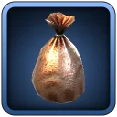

Item
Ravager Seal
Rare global item. Counts as one extra unit toward Ravager, as long as at least one Ravager unit of yours is on the board.
Counts as one extra unique Ravager unit for your alliances.
That is the wording on the item's card. The sections below are worked out from the item itself and say what happens in play.
As a rare item (tier 3) it is offered on rounds 16 and 20. See Loot and items for how offers work.
What it does
Global item: it is never given to a unit and works from the moment you own it.
Counts as one extra unit toward Ravager, as long as at least one Ravager unit of yours is on the board (how alliances count).
It is no longer offered as loot once you own one copy.
Alliances
While you own it you count as having 1 more unique  Ravager unit. Ravager steps are at 2 and 4 units.
Ravager unit. Ravager steps are at 2 and 4 units.
- Step at 2: reached with 1 unit of your own on the board instead of 2.
- Step at 4: reached with 3 units of your own on the board instead of 4.
Who can carry it
No unit carries Ravager Seal. It goes to you the moment you pick it and works from then on, whichever units you field. It cannot be equipped on a unit and it does not take a slot in the item inventory.
You can own 1 copy at most.
Other tier 3 global items
 War Drums
War Drums
Tithe Purse Stalker Crest
Stalker Crest Abyssal Emblem
Abyssal Emblem Duelist Token
Duelist TokenSee also
- Loot and items: loot rounds, offers, the inventory and equipping.
- Items: every item by tier and kind.
- Item table: every item's bonuses side by side.